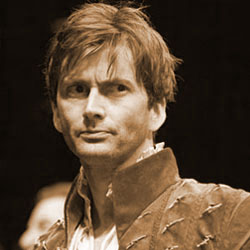

|  |
The tenth Doctor was portrayed by David Tennant, a Scottish actor (born David John McDonald). Doctor Who returned to British screens in 2005, as Christopher Eccleston played the role of the Ninth Doctor in that series. Tennant replaced Eccleston as of the second series, making his first, brief appearance as the Tenth Doctor in the episode "The Parting of the Ways" (2005). He began filming the new series of Doctor Who in late July 2005. His first full-length outing as the Doctor was a 60-minute special, "The Christmas Invasion", first broadcast on Christmas Day 2005. |